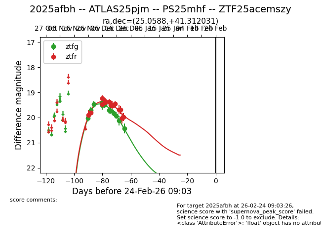
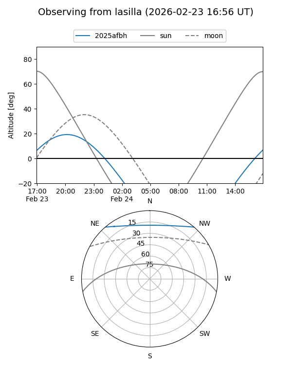
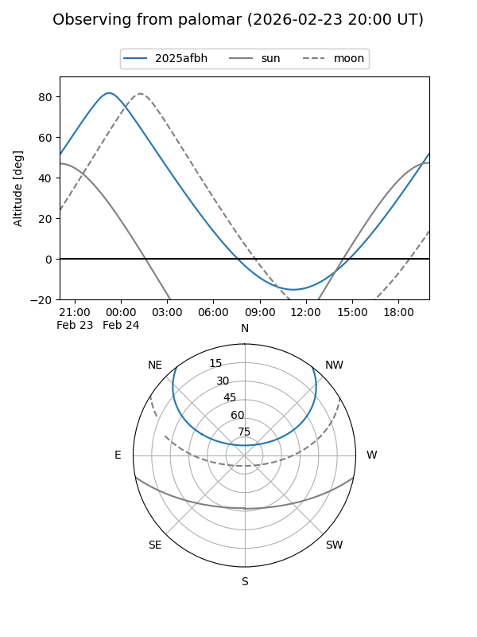

2025afbh
Target 2025afbh at 2025-12-21 05:23
Aliases and brokers:
FINK: fink-portal.org/ZTF25acemszy
Lasair: lasair-ztf.lsst.ac.uk/objects/ZTF25acemszy
ALeRCE: alerce.online/object/ZTF25acemszy
TNS: wis-tns.org/object/2025afbh
YSE: ziggy.ucolick.org/yse/transient_detail/2025afbh
alt names
ZTF25acemszy (ztf,fink_ztf)
2025afbh (tns,yse)
Coordinates:
equatorial (ra, dec) = 25.0588,+41.31203
equatorial (HMS+DMS) = 01:40:14.11,+41:18:43.31
galactic (l, b) = (132.6965,-20.63266)
Flags:
Photometry:
last ztfg=20.12, ztfr=19.98
12 ztfg, 15 ztfr detections
Lightcurve

Visibility


Additional plots